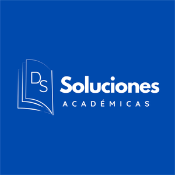
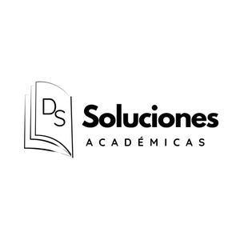
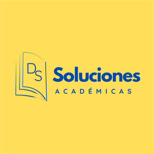

Servicios académicos profesionales
Tu trabajo académico empieza con un alcance claro.
Tesis, trabajos de maestría, pregrado y documentos para docentes e instituciones. Revisamos tus requisitos y definimos por escrito qué se hará, cuándo y con cuántos ajustes.
Portafolio / cuatro rutas
No elijas un paquete.
Elige tu situación.
Cada ruta activa un expediente distinto. Tú envías la guía; DS revisa el caso y confirma alcance, precio y fecha.
Proceso / sin letra pequeña
Cuatro pasos.
Cada decisión queda clara.
No iniciamos con una promesa genérica. Primero revisamos lo que exige tu institución y confirmamos qué es viable.
Preparar los datos de mi trabajo ↓- 01RECIBIDO
Envía requisitos
Guía, rúbrica, avance, observaciones y fecha requerida.
- 02DEFINIDO
Recibe la propuesta
Entregables, valor, plazo y ajustes incluidos por escrito.
- 03APROBADO
Confirma el servicio
El trabajo inicia al aceptar las condiciones y registrar el anticipo.
- 04ENTREGADO
Recibe la entrega
Archivo acordado y atención de los ajustes incluidos.
Docentes e instituciones
Documentos que responden a una realidad institucional.
La institución aporta su diagnóstico, identidad y decisiones. DS organiza, desarrolla y fortalece el documento técnico.
Experiencia adicional
Medicina y ciencias de la salud
Investigaciones, ensayos, informes, revisiones bibliográficas, análisis bioestadísticos y presentaciones del área.
Consultar viabilidad ↗


Identidad y responsabilidad
Una marca profesional para un servicio con alcance claro.
DS Soluciones Académicas está dirigido por el Lic. Diego Fabricio Soto Roa, docente investigador y asesor metodológico.
La experiencia en educación, investigación, estadística aplicada y tecnología educativa permite abordar cada encargo con criterio técnico y comunicación directa, sin necesidad de exponer fotografías personales.
La identidad visual oficial acompaña cada propuesta y comunicación del servicio.
Consultar mi caso ↗Cotización guiada
Prepara un mensaje útil en menos de un minuto.
Selecciona tres datos. El botón crea un mensaje ordenado para WhatsApp; después podrás adjuntar tu guía o rúbrica.
No envíes contraseñas, números de identificación ni datos clínicos sensibles.
Recurso gratuito
Calcula el tamaño de tu muestra. Sin registro, sin costo.
Publicamos herramientas de uso libre para que resuelvas por tu cuenta lo que puedas resolver solo. La primera calcula el tamaño de muestra de tu investigación y entrega la redacción metodológica lista para tu documento.
- Población finita o muy grande
- Ajuste por efecto de diseño y no respuesta
- Fórmula y supuestos a la vista
- Redacción y ficha técnica copiables
218
participantes para N = 500, confianza 95 %, error 5 %
Antes de iniciar
Las dudas de siempre, sin rodeos.
La propuesta final siempre se adapta a los requisitos concretos de tu trabajo.
01¿Qué debo enviar para recibir una cotización?+
El tipo de trabajo, la guía o rúbrica, el avance disponible, la extensión aproximada y la fecha requerida.
02¿Cómo se define el precio?+
Depende del alcance, nivel académico, complejidad, extensión, documentación disponible y plazo.
03¿Cuántos ajustes están incluidos?+
La propuesta indica una cantidad concreta. Un cambio de tema, estructura o alcance se cotiza por separado.
04¿Atienden trabajos urgentes?+
Sí, cuando el alcance es viable y existe disponibilidad. La fecha se confirma antes de iniciar.
05¿Atienden fuera de Loja?+
Sí. La atención es digital para clientes de todo Ecuador y ecuatorianos que estudian en el exterior.
06¿Garantizan aprobación o una calificación?+
No. Entregamos el alcance académico acordado con criterios técnicos; la evaluación final depende de cada institución.
Siguiente paso
Envía los requisitos.
Recibe una propuesta clara.
Revisamos tu guía, avance y fecha antes de confirmar el servicio.
Cotizar por WhatsApp ↗+593 98 907 4861